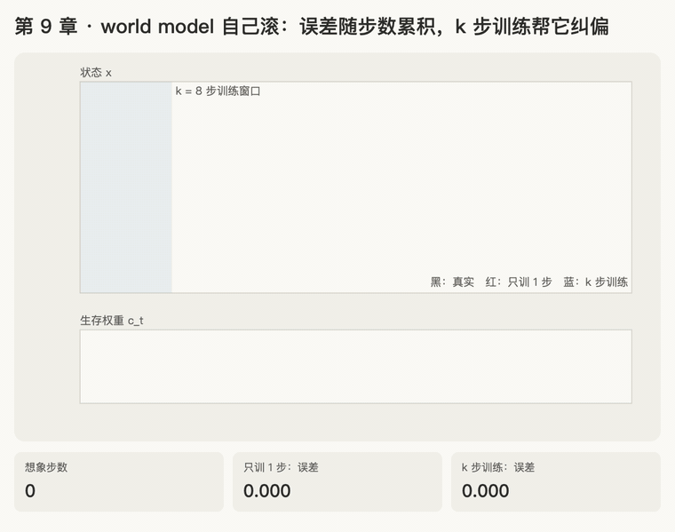

第 9 章 · 可微 world model：学一个能求导的「物理模拟器」
本章回答：解析梯度要可微的环境，真实仿真器不可微，怎么办？SuperMimic 的 world model 为什么可以是确定性的？为什么用 8 步窗口自回归地训练，而不是只预测下一步？摔倒这种「突然结束」怎么变得可导？
讲解日期：2026-11-20 · 上一章：第 8 章 两种梯度 · 下一章：第 10 章 在想象里训练
对应原文：SuperMimic §3.1（papers/supermimic-2610.28480.txtL219–L230：确定性策略、动作噪声、生存权重）、§3.2（L237–L256，式 1）、§4.2「One model amortizes」（L405–L409）、附录 A（L711：去掉推搡扰动）
本章缩写：WM = World Model（世界 / 模型：学出来的环境动力学）；f_ω：动力学网络（ω 读 "omega"，是它的参数）；ŝ：模型预测的状态（hat 记号 ^ 表示「模型的版本」）；ξ：sim context，这一局的随机化参数（第 4 章）；k：训练窗口长度（这里 8）；d̂：预测的终止概率；c_t：生存权重；BCE = Binary Cross-Entropy（二元 / 交叉熵）；MLP = Multilayer Perceptron（多层 / 感知机）。全部缩写见 附录 · 缩写与术语表
讲解
第一步：为什么要学一个，而不是直接对仿真器求导（2026-11-20）
类比：你没法拆开一台老式收音机看电路，但可以听它对每个旋钮的反应，自己画一张「旋钮 → 声音」的近似图，再在图上算「往哪拧更好」。
真实的刚体仿真器（MuJoCo Warp）有两个问题：接触是突变的（脚一碰地，速度瞬间变），导数要么不存在要么很大；很多实现本身不支持求导。SuperMimic 的办法（§3.2）：从仿真器记录下来的转移 \((s_t, a_t, s_{t+1})\) 里，学一个可微的替代模型
再配上奖励头、观测头、终止头（奖励能直接写公式的就不学）。\(f_\omega\) 是一个 3 层、每层 2048 宽的 MLP（附录表 A.4）。
它的好处是第 7 章说的：所有动作都由同一副身体执行，一个模型学的是这副身体的物理，动作库从 1 小时扩到 264 小时，8 步预测误差始终在 0.007–0.011（L405–L409）。新动作只是给同一套物理多提供证据。
一句话：仿真器不可导，就从它的数据里学一个可导的近似；物理是共享的，一个模型就够。
第二步：确定性模型：已知的随机性直接告诉它（2026-11-20）
类比：天气预报员如果知道今天有冷空气南下，就不用给出「可能冷可能热」的模糊预报，直接说「降温 5 度」。
仿真里的随机性来源都是已知的（L241–L246）：
| 随机性 | SuperMimic 怎么处理 |
|---|---|
| 每局的摩擦、标定、质心（ξ） | 作为模型输入（第 4 章） |
| 传感器噪声 | 模型预测无噪声观测 ō，噪声在模型外面按已知分布加 |
| 采数据时的动作噪声 ε ~ N(0, 0.1²) | 存进缓冲区的是加了噪声后实际执行的动作，模型用它训练（L219–L223） |
| 推一把（根部速度突变） | 去掉：确定性模型学不了这种突变（附录 A，L711） |
所以模型可以是确定性的：同样的 \((s, a, \xi)\) 永远给出同样的下一状态。确定性模型好学、好求导。动作噪声只为让模型见过更宽范围的动作，策略本身是确定性的（第 10 章）。
一句话：知道的随机性当输入或在外面加，模型就不用学分布，可以是一个确定的函数。
第三步：误差会滚大：k 步自回归训练（2026-11-20）
类比：闭眼走路。每步偏一点点，走 1 步没事，走 30 步就离路线很远了。
想象的时候，模型要吃自己的预测往前滚：\(\hat s_1 = f(s_0)\)，\(\hat s_2 = f(\hat s_1)\)……每步的小误差会累积。
玩具例子（编的）：真实系统 \(x_{t+1} = 0.95\,x_t\)，模型学成 \(0.97\,x_t\)（每步只差 0.02），起点 \(x_0 = 1\)：
| 滚几步 | 1 | 8 | 32 |
|---|---|---|---|
| 误差 | 0.020 | 0.120 | 0.184 |
只训练「预测下一步」（1 步损失）时，这个模型的损失是 0.0004，看起来很准；但 8 步自回归损失（从真实起点出发、一路用自己的预测、8 步误差平方加起来）是 0.0532，大了 133 倍，问题一下就暴露了。
SuperMimic 用 k = 8 的自回归窗口训练（式 1，L248–L251）：
四项分别管状态、奖励、观测、终止。因为训练时就让模型「吃自己的预测」，它学会了纠正自己的偏差。论文说想象 32 步甚至更长都稳定（L262–L264 附近），虽然只用 8 步窗口训练。
一句话：想象时模型吃自己的预测，误差会滚大；训练时就按 8 步自回归算损失，逼它学会不跑偏。
第四步：生存权重：让「摔倒」也能求导（2026-11-20）
类比：不是「活着 = 1、摔了 = 0」的开关，而是「还有几成把握站着」的旋钮。
仿真器的终止是硬的（0 或 1），不可导。world model 预测一个终止概率 \(\hat d_t \in [0, 1]\)，回报里每步乘一个生存权重（L224–L230）：
例子：\(\hat d_1, \hat d_2, \hat d_3 = 0, 0.1, 0.5\)：
| t | 0 | 1 | 2 | 3 |
|---|---|---|---|---|
| c_t | 1 | 1 | 0.9 | 0.45 |
每步奖励都是 1 时，前三步的加权回报 = 1 + 1 + 0.9 = 2.9。策略稍微改一下动作，d̂ 平滑地变，c 和回报也平滑地变，梯度就能告诉它「这样改会不会更容易摔」。
一句话：终止概率连乘成生存权重，摔倒从开关变成旋钮，就能求导了。
动画演示：误差在想象里怎么滚大

可交互版：animations/09-wm-rollout.html（滑块：模型系数误差、窗口长度 k）。
怎么看：
- 黑线是真实轨迹，红线是「只训 1 步」的模型自己滚出来的，蓝线是「8 步窗口训练」的模型（第三步）。
- 阴影是 8 步训练窗口；红线在窗口里就开始偏，越往后越远。
- 下方小图是生存权重 c_t：每步按 d̂ 打折，柱子越来越矮（第四步）。
练习与作答记录
题 1（第二步）：如果要用真机数据来训练 world model，传感器噪声和摩擦都不再已知，第二步表格里哪几条做法会失效？你会怎么改？
作答：（待作答）
题 2（第三步）：真实系统 \(x_{t+1} = 0.9x_t\)，模型学成 \(0.92x_t\)，\(x_0 = 1\)。算滚 1 步和 4 步的误差。
作答：（待作答）
题 3（第四步）：\(\hat d_1, \hat d_2, \hat d_3, \hat d_4 = 0.2, 0.2, 0.5, 1.0\)。写出 \(c_0\) 到 \(c_4\)。
作答：（待作答）
口诀
收音机拆不开，听反应画近似图，同一副身体一个模型；
知道的随机当输入、在外加，推搡学不了就去掉；
闭眼走路误差滚，八步自回归逼它纠偏；
摔倒变概率，生存权重连乘，开关变旋钮。
本章复习卡片
M17（world model 为什么能是确定性的：ξ 作输入、噪声外加、去掉推搡）、M18（k 步自回归损失与生存权重）
附录 · 延伸阅读
留给以后深入学习用，不影响本章主线。★ 是建议先读的。
推荐阅读
| 读什么 | 读哪里 | 读它为了什么 |
|---|---|---|
| ★ SuperMimic §3.1–§3.2 | papers/supermimic-2610.28480.txt L204–L256 |
确定性模型、式 1 原文 |
| ★ SuperMimic §4.2 | 同上 L401–L442 | 一个模型摊销整个动作库、想象比仿真快 10–62 倍 |
| RWM | papers/rwm-2501.10100.txt |
另一种神经仿真器，在里面跑 PPO 上真机 |
| DreamerV3 | papers/dreamerv3-2301.04104.txt |
隐空间 world model 的代表 |
| 《CIS 6280 世界模型》 | cis6280-world-models/ |
世界模型的更一般框架 |
数学原理
- 自回归滚动：\(\hat x_k = f(f(\cdots f(x_0)))\)，线性时 \(\hat x_k = a^k x_0\)，误差 \(|(\hat a^k - a^k)x_0|\)。
- 二元交叉熵：\(\text{BCE}(\hat d, d) = -[d\log\hat d + (1-d)\log(1-\hat d)]\)，用来训练终止概率。
- 连乘的导数：\(c_t = \prod (1-\hat d_i)\) 对每个 \(\hat d_i\) 都可导，所以梯度能传到「哪一步更容易摔」。
公式清单
| 公式 | 意思 |
|---|---|
| \(\hat s_{t+1} = f_\omega(\hat s_t, a_t, \xi)\) | 确定性、以 ξ 为条件的动力学 |
| \(\mathcal L_{WM} = \sum_{j\le k}[\text{状态} + \text{奖励} + \text{观测} + \text{BCE}]\) | k 步自回归损失（式 1） |
| \(c_{t+1} = c_t(1 - \hat d_{t+1})\) | 生存权重 |
代码对照：把本章的数字用代码算一遍
用 Python + NumPy 把讲义里讲过的数算一遍，不算练习题。代码在仓库本地
robot-motion-rl/solutions/chapter-code/ch09_world_model.py，配套测试tests/test_ch07_11.py，notebook 在notebooks/ch09_world_model.ipynb。Mac 上直接能跑，不需要 GPU：
bash cd robot-motion-rl/solutions/chapter-code uv run python ch09_world_model.py uv run pytest tests/test_ch07_11.py
讲义 ↔ 代码（玩具系统和 d̂ 是编的）：
| 讲义 | 公式 | 写法 | 跑出来 |
|---|---|---|---|
| 第三步 误差滚大 | $ | 0.97^k - 0.95^k | $ |
| 第三步 损失 | \(\sum_{j\le k}(\hat x_j - x_j)^2\) | k_step_loss(..., 1)、(..., 8) |
0.0004、0.0532 |
| 第四步 生存权重 | \(c_{t+1} = c_t(1-\hat d)\) | survival_weights([0, 0.1, 0.5]) |
[1, 1, 0.9, 0.45] |
关键几行：
xh = x0 * a_model ** np.arange(k + 1) # 模型从真实起点出发，一路吃自己的预测
x = x0 * a_true ** np.arange(k + 1) # 真实轨迹
loss = np.sum((xh[1:] - x[1:]) ** 2) # k 步自回归损失
c.append(c[-1] * (1 - d)) # 生存权重连乘
代码里才看得到的 2 件事：
- 误差滚到 32 步只有 0.184，没有一直变大：因为 0.95 和 0.97 都小于 1，两条轨迹最后都衰减到 0。真实的机器人动力学不会这么「自己收敛」，所以 SuperMimic 要靠 k 步训练和 critic（第 10 章）把视野控制住。
- 生存权重列表比 d̂ 多一个（\(c_0 = 1\) 不打折），所以
[0, 0.1, 0.5]对应 4 个 c。
自己改一改（不影响练习答案）：
- 把真实系数改成 1.01（不稳定的系统），看误差滚 32 步变成多少。
- 用 1 步损失和 8 步损失分别「拟合」：在 0.90 到 1.00 之间扫模型系数，给真实数据加一点噪声，看两种损失选出的系数哪个滚 32 步更准。